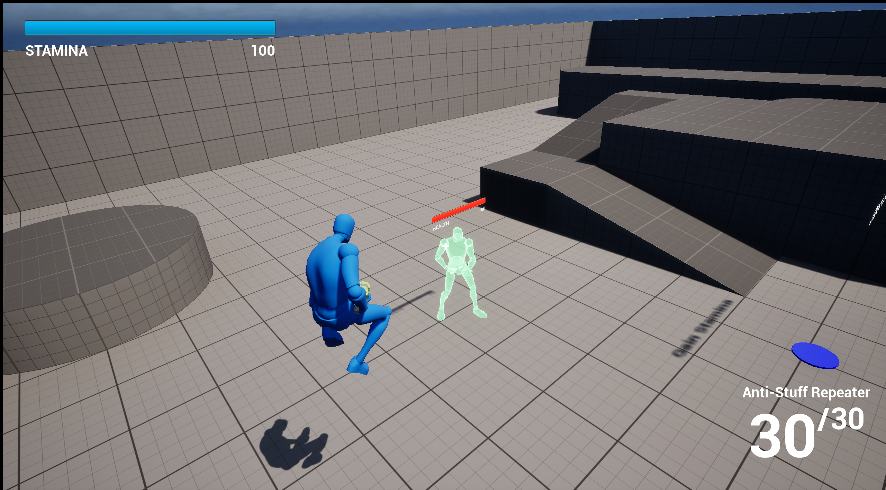

Project 4
ThirdPerson Shooter
A third-person shooter game made in Unreal Engine as a one-day challenge, featuring different weapons, third-person movement and aiming, as well as health reduction and regeneration.

Detailed Description
This section is reserved for a detailed case study. You can describe your one-day scope planning, weapon implementation, and how you handled player health and regeneration loops.
Add notes about controls, combat feel iteration, and what features you would prioritize with more time.
Project Media


